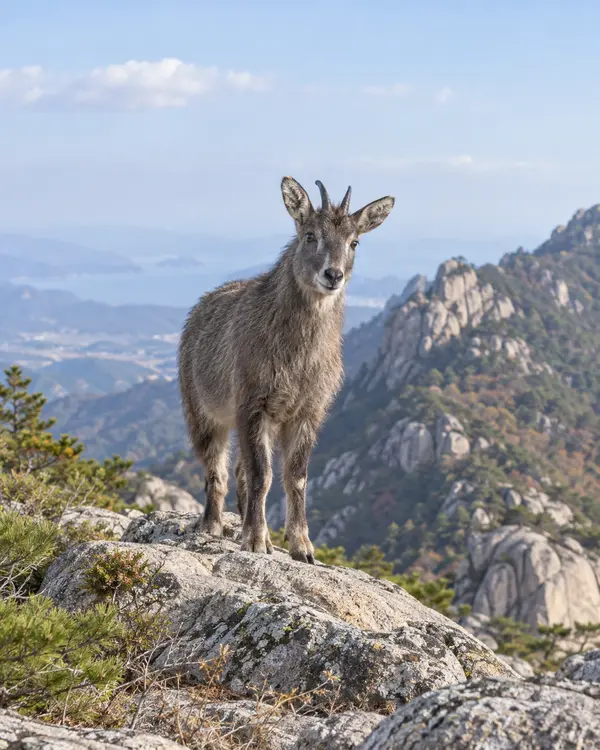
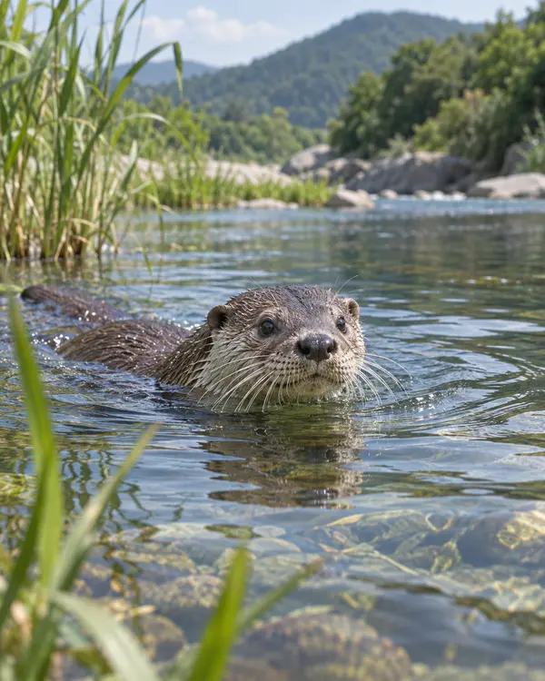
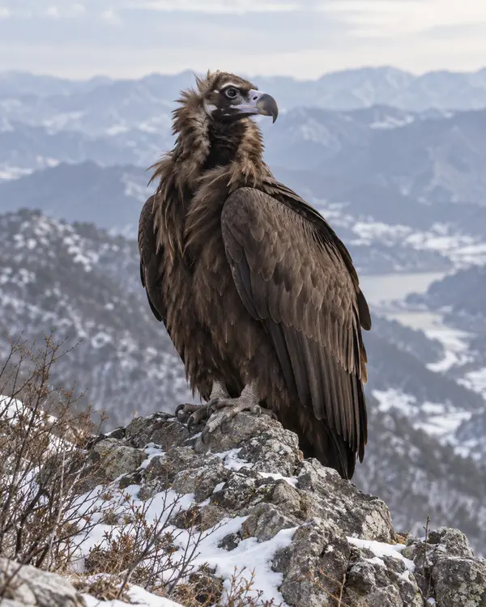

← 천연기념물 이야기로KOREA · NATURAL MONUMENT ANIMALS
우리나라가 지키는
천연기념물 동물들.
한국에서 천연기념물로 지정해 보호하는 동물을 소개합니다. 카드에 마우스를 올리거나 터치해 특징·서식지·먹이를 살펴보세요.
전 세계 멸종위기동물은 추후 추가할 예정입니다.

- 특징
- 튼튼한 발굽으로 바위 지형을 잘 오르며, 암수 모두 짧은 뿔이 있습니다.
- 서식지
- 설악산·월악산 등 가파른 바위가 있는 높은 산림 지대에 삽니다.
- 먹이
- 어린잎과 풀, 열매 등 식물성 먹이를 먹습니다.

- 특징
- 물속 생활에 적응한 포유류로, 조밀한 털이 보온과 방수를 돕습니다.
- 서식지
- 물가 식생이 풍부한 하천·호수 주변에 살며 바위틈과 나무뿌리 아래를 은신처로 씁니다.
- 먹이
- 주로 물고기를 먹고 양서류와 갑각류 등도 먹습니다.

- 특징
- 넓고 긴 날개를 가진 대형 조류입니다. 죽은 동물을 먹으며 생태계의 청소부 역할을 합니다.
- 서식지
- 우리나라에서는 겨울철 하천·하구·농경지처럼 시야가 트인 곳에서 지냅니다.
- 먹이
- 동물의 사체를 주로 먹습니다.
어디에서 확인했나요?
생태 설명은 국립생태원 자료를 바탕으로 요약했습니다. 아래 링크는 원문을 확인할 때만 새 창으로 열립니다.
생태 정보 확인: 2026.11.10 · 이미지는 기존 ANIMALS 사이트의 일러스트형 자산을 사용했습니다.